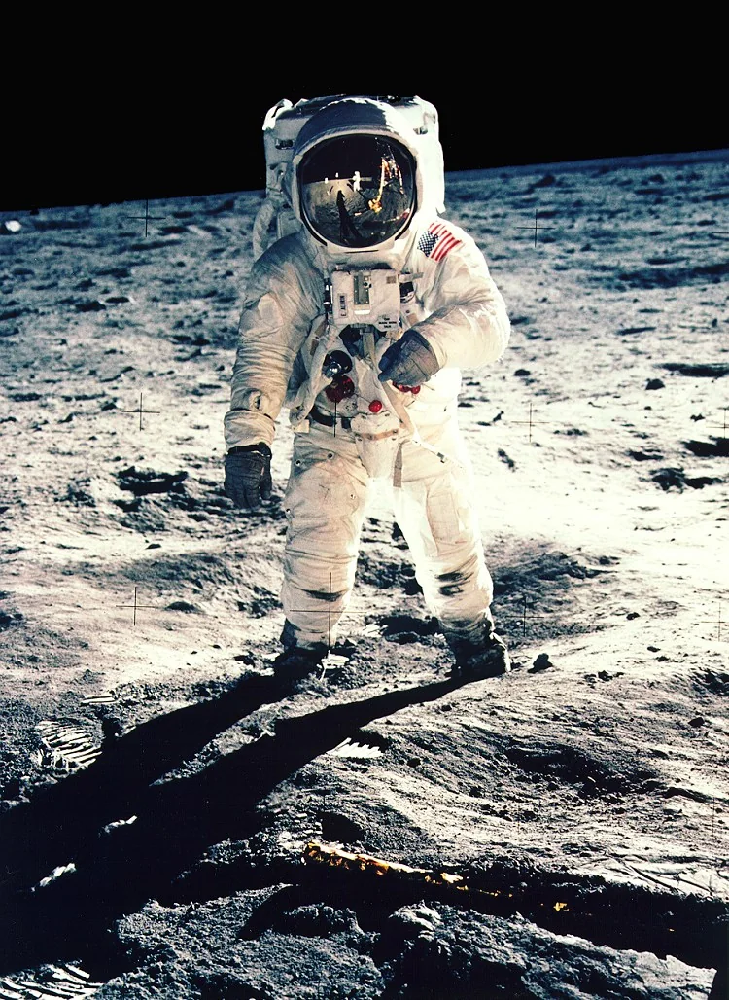
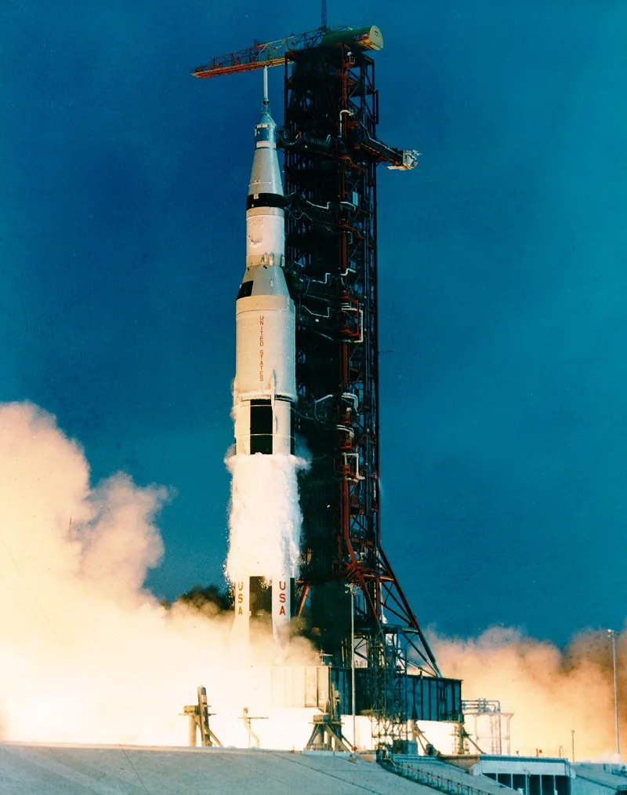
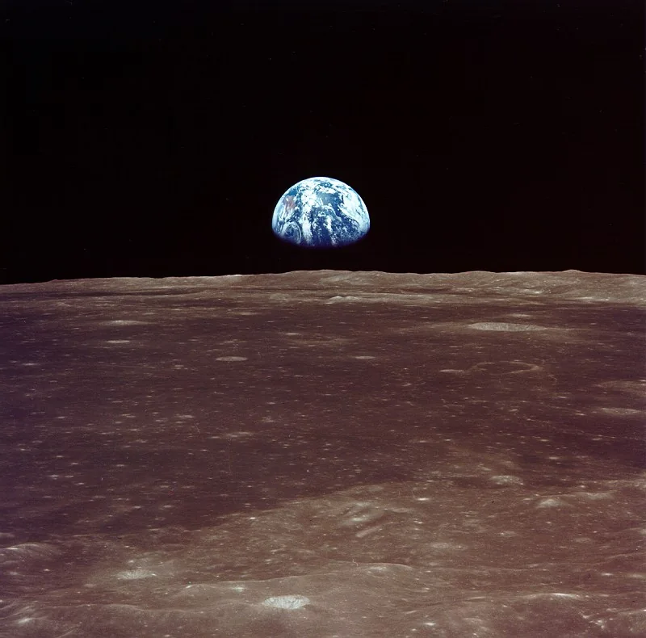
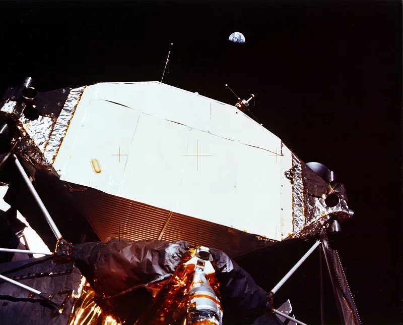
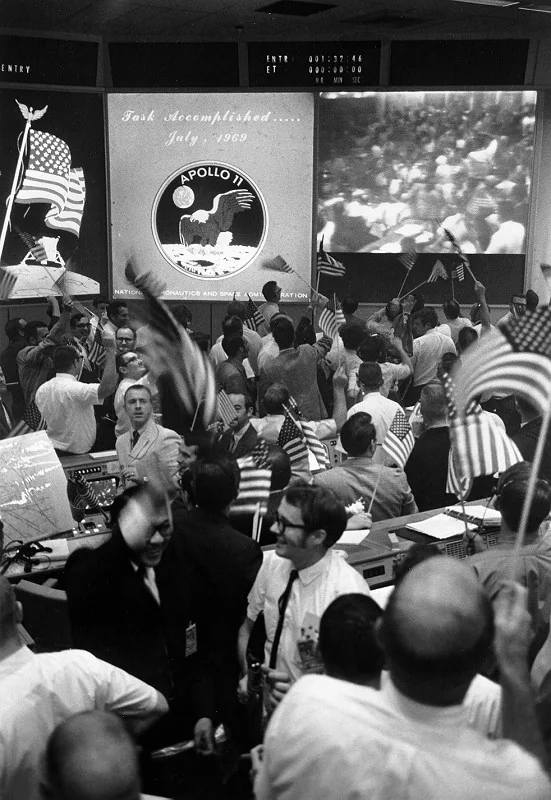
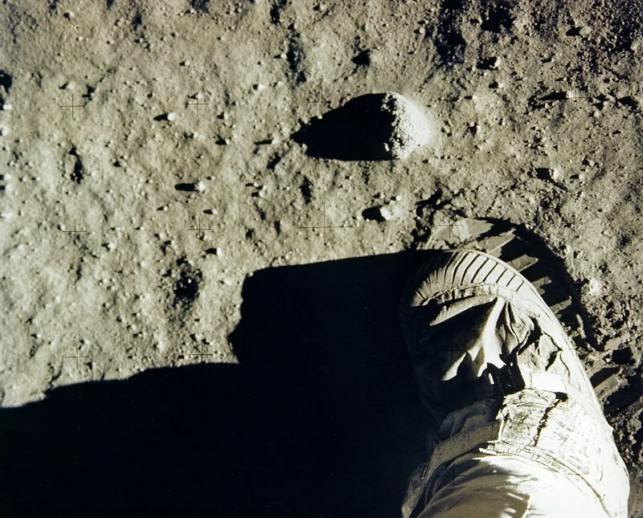

16 يوليو 1969: صاروخ يفتح الطريق إلى القمر
في مركز كينيدي للفضاء بفلوريدا، انطلق صاروخ ساتورن 5 وعلى متنه نيل أرمسترونغ وباز ألدرين ومايكل كولينز. كان هدف أبولو 11 غير مسبوق: إنزال بشر على القمر وإعادتهم سالمين إلى الأرض. وبينما استعد أرمسترونغ وألدرين للهبوط، كانت مهمة كولينز أن يبقى في المدار القمري على متن مركبة القيادة كولومبيا، ينتظر عودتهما.

20 يوليو: الحاسوب يطلق الإنذارات
في أثناء هبوط المركبة القمرية إيغل، ظهر إنذار الحاسوب 1202 ثم 1201. كانت المعالجة الحاسوبية مثقلة بالمهام، لكن فريق التوجيه في مركز التحكم أكد أن الهبوط يمكن أن يستمر. لم تكن اللحظة مجرد مشكلة تقنية؛ كانت اختبارًا لثقة الطاقم بمهندسين يتابعون إشارات محدودة من مسافة تقارب 384 ألف كيلومتر.

موقع الهبوط لم يكن آمنًا
عندما اقترب إيغل من السطح، لاحظ أرمسترونغ أن المركبة تتجه نحو منطقة مليئة بالصخور والحفر. تولى التحكم اليدوي جزئيًا، ووجّه المركبة إلى منطقة أكثر ملاءمة. ومع اقتراب الوقود من الحد الحرج، جاءت الرسالة التي انتظرها العالم: هبطت إيغل في بحر الهدوء عند الساعة 20:17 بالتوقيت العالمي يوم 20 يوليو 1969.
الخطوة الأولى: لحظة شاهدها العالم
بعد ساعات من الهبوط، نزل أرمسترونغ سلّم المركبة ووضع قدمه على سطح القمر عند الساعة 02:56 بالتوقيت العالمي يوم 21 يوليو. انضم إليه ألدرين لاحقًا، بينما بقي كولينز وحيدًا في المدار القمري. كانت الصور التلفزيونية متواضعة الجودة مقارنة بمعايير اليوم، لكن معناها كان استثنائيًا: أصبح البشر قادرين على السير فوق عالم آخر.
ما الذي فعله الرائدان على السطح؟
لم يكن الهبوط مجرد رفع علم والتقاط صور. جمع أرمسترونغ وألدرين نحو 21.5 كيلوغرامًا من العينات القمرية، ونشرا أدوات علمية شملت عاكسًا ليزريًا وتجربة لرصد الزلازل، والتقطا صورًا وثائقية للسطح والمركبة. ساعدت العينات لاحقًا في دراسة تاريخ القمر وتكوّنه، ولا تزال بعض أدوات القياس المرتبطة ببرنامج أبولو ذات قيمة علمية.
العودة: أخطر رحلة لم تنتهِ بعد
أقلعت مرحلة الصعود من إيغل من سطح القمر في 21 يوليو، والتحمت بمركبة كولينز في المدار. بعد الانتقال إلى كولومبيا، عاد الرواد الثلاثة باتجاه الأرض. وفي 24 يوليو هبطت الكبسولة في المحيط الهادئ، لتنتهي رحلة استغرقت نحو ثمانية أيام. النجاح لم يكن لحظة النزول على القمر فقط، بل العودة منه أحياء.

لماذا غيّر أبولو 11 التاريخ؟
كان الإنجاز نتاج سنوات من العمل الهندسي والعلمي وتعاون مئات الآلاف من الأشخاص. كما كان جزءًا من التنافس الفضائي في الحرب الباردة. لكنه ترك إرثًا يتجاوز السياسة: عينات علمية، وتطورًا في الملاحة والحوسبة والاتصالات، ودليلًا عمليًا على قدرة البشر على تنفيذ مشروع يبدو مستحيلًا إذا توفرت له المعرفة والموارد والتنسيق.

